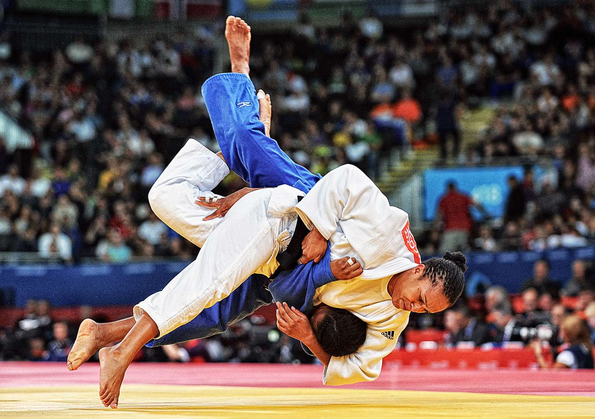

| امتیازات در جودو |
|---|
| امتیاز یوکو |
| امتیاز وازاری |
| امتیاز ایپون |
.امتیاز یوکو معادل 1 امتیاز است
.امتیاز وازاری یا امتیاز بزرگ معادل 10 امتیاز است
.امتیاز ایپون یا امتیاز کامل یا امتیاز ضربه فنی که معادل 100 امتیاز است و منجر به برد و پایان مسابقه میشود
.کسب دو امتیاز وازاری در مسابقه نیز معادل امتیاز ایپون است و باعث پایان مسابقه میشود
.پیشتر در جودو امتیازی به نام کوکا وجود داشت که در سال 1988 حذف شد